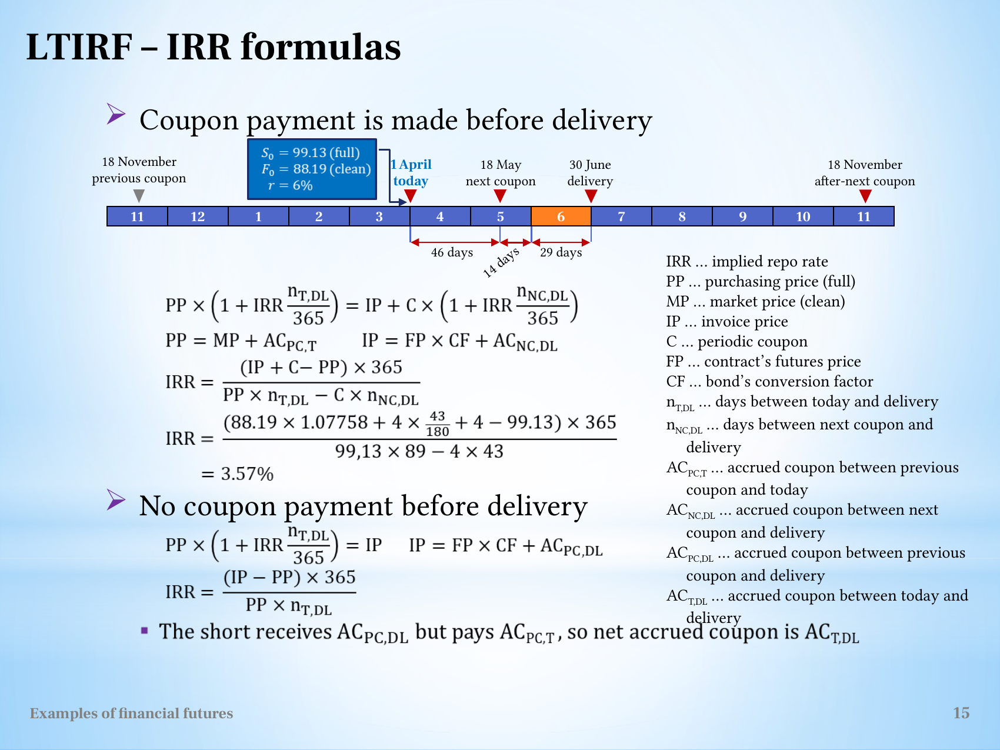

Derive implied repo rates and choose a comparable eligible cheapest-to-deliver bond
Explanation, worked examples and practice
Useful first: Convert bond-futures quotations into clean factors, full invoices and conditional carry
Outcome and conditions
Notation, units and assumptions One coupon before delivery No coupon before delivery Compare eligible bonds and choose CTD
Study conditions, assessment scope and sources
Derive one-coupon and no-coupon implied repo returns and rank a given eligible basket under explicit conventions. Required components: full_cashflow_identity_and_formula, numeric_rates_and_eligible_ranking, financing_and_source_limits. Supported work may use the cited notes; independent checks use no notes, internet, solution or hints. A basic calculator and blank paper are allowed; reasoning, formula selection and assumptions must be supplied by the learner. Numerical examples below are agent-created hypothetical instantiations unless explicitly labelled as a finished-note example. They do not assert current market or policy facts.
Prerequisites and checks
Check the prerequisites
O013-P1 / item_version 1: O012 is needed because full purchase/invoice amounts and \(\mathrm{CF}\) semantics are the inputs to repo cash flows. Prompt: Clean market \(99\) plus purchase \(\mathrm{AC}=1\), and clean futures \(95\) with \(\mathrm{CF}=1.02\) plus delivery \(\mathrm{AC}=.5\): full \(\mathrm{PP}\)/\(\mathrm{IP}\)? Key: \(\mathrm{PP}=100\); \(\mathrm{IP}=97.4\) per \(100\). \(\mathrm{CF}\) acts only on clean futures quote. Pass requires the keyed mechanism and qualification; partial means an omitted step; fail means a conflicting mechanism. Adequate committed evidence under a compatible criterion permits skipping this diagnostic. Otherwise repair through Outcome and conditions before continuing.
Motivation and explanation
A short-financed delivery resembles a loan: buy the full cash bond \(\mathrm{PP}\) at time \(0\) and receive full invoice \(\mathrm{IP}\) at delivery. With simple annual \(r\) and \(n\) days, the initial cash grows to \(PP(1+rn/365)\). If coupon \(C\) is received \(m\) days before delivery and reinvested at this same \(r\), receipts are \(IP+C(1+rm/365)\). Equating sides, collect \(r\) terms: \(r(PP n-Cm)/365=IP+C-PP\). A nonzero denominator therefore gives \(r=365(IP+C-PP)/(PP n-Cm)\). No coupon sets \(C=0\), yielding \(365(IP-PP)/(PP n)\). These are implied annual repo returns under the stated model, not a compounded project IRR. The finished-note source's printed \(3.57\%\) does not exactly match its given inputs: using \(43/180\) accrued coupon yields about \(3.61742\%\); the note exposes the mismatch. Prepared examples specify consistent full inputs, coupon dates and \(365\) convention. CTD maximises comparable eligible IRR; actual borrowing costs, fees and cash-flow timing decide realised profit. No actual basket in notes means no actual CTD can be named.
Read the full explanation
Reading context
Deliver these complete reused passages before the worked example; the earlier concise teaching prompts are checkpoints, not substitutes. Necessary prerequisite lessons remain the routes specified above. Course-organization details in O001 are supporting context, not additional scoring components.
Source passage
Origin: reused complete checked passage Implied repo rate and cheapest to deliver; fingerprint cc1472840d045ac50e647cb4be41302f7eeca6bf21ea19e86c7d6305b27d2153. Heading depth alone is adapted.
Implied repo rate and cheapest to deliver
Which bond should a short select when several bonds are eligible for delivery into the same futures contract? The lecture identifies the cheapest-to-deliver (CTD) bond as the eligible bond with the highest implied repo rate (IRR). IRR measures the annualized return implied by buying a bond at its full spot price and realizing the delivery invoice and any intervening coupon. Here IRR means implied repo rate throughout; it does not refer to a generic project internal rate of return. L11(ExamplesOfFinancialFutures).pptx, slide 14 L11(ExamplesOfFinancialFutures).pptx, slide 15
Bond futures, conversion factors and delivery explains the conversion-factor and accrued-coupon inputs. Selecting the lowest unadjusted clean market price would ignore the different delivery proceeds and coupon cash flows. The CTD comparison must consider the complete transaction on a consistent day-count and quotation basis. L11(ExamplesOfFinancialFutures).pptx, slide 14 L11(ExamplesOfFinancialFutures).pptx, slide 15
Why the return resembles a repo loan
The source compares an actual repo, in which cash is advanced against a bond and returned with interest, with a purchase-to-futures-delivery transaction. Buying the bond creates an initial cash outflow. Delivering the bond into the futures contract creates a later cash inflow. These flows can be described as an implied loan: the purchase amount is the advance and the delivery proceeds are its repayment. The bond may also pay a coupon before delivery, which the source assumes can be reinvested at the same implied rate until delivery. The short's actual money-market borrowing is a separate financing leg. L11(ExamplesOfFinancialFutures).pptx, slide 14
The initial outflow includes the clean market price and accrued coupon paid to the bond seller. The terminal inflow includes the conversion-adjusted clean futures price and accrued coupon paid by the receiver at delivery. If a coupon arrives before delivery, its reinvested amount also contributes to the terminal value. Thus IRR compares a complete stream of purchase and delivery cash flows, rather than comparing the futures quotation directly with the clean market price. L11(ExamplesOfFinancialFutures).pptx, slide 14 L11(ExamplesOfFinancialFutures).pptx, slide 15
Notation, units and assumptions
Use all prices on the same face-value basis, such as dollars per USD 100 face value. Define:
| Symbol | Meaning |
|---|---|
| \(PP\) | Full purchasing price today |
| \(MP\) | Clean market purchasing price today |
| \(IP\) | Full invoice price at delivery |
| \(FP\) | Contract's clean futures quotation |
| \(CF\) | Deliverable bond's dimensionless conversion factor |
| \(C\) | One periodic coupon payment |
| \(n_{T,DL}\) | Days from today (\(T\)) to delivery (\(DL\)) |
| \(n_{NC,DL}\) | Days from the next coupon (\(NC\)) to delivery |
| \(AC_{PC,T}\) | Coupon accrued from previous coupon (\(PC\)) to today |
| \(AC_{NC,DL}\) | Coupon accrued from next coupon to delivery |
| \(AC_{PC,DL}\) | Coupon accrued from previous coupon to delivery |
| \(AC_{T,DL}\) | Coupon accrued from today to delivery when no coupon intervenes |
The source formulas use simple annual rate accrual with day fractions \(n/365\). In the one-coupon case, they assume that coupon is reinvested at IRR. There are no fees or taxes in the displayed cash-flow equations. IRR is an implied transaction yield. Compare it with actual financing separately when discussing whether the financed transaction is profitable. L11(ExamplesOfFinancialFutures).pptx, slide 14 L11(ExamplesOfFinancialFutures).pptx, slide 15
One coupon before delivery
The purchase is \(PP=MP+AC_{PC,T}\). After the intervening coupon, accrued coupon restarts, so the delivery invoice is
The purchase amount accumulated to delivery must equal the invoice plus the coupon accumulated from its own payment date:
The right-hand coupon interest covers fewer days because the coupon arrives after the bond purchase. Expanding and collecting the \(IRR\) terms gives
and therefore
The numerator is the undiscounted surplus, scaled to an annual rate. The denominator accounts for the amount and duration of invested cash, reduced by the coupon that arrives before delivery and can be reinvested. Both numerator and denominator use money times days, so the ratio is a dimensionless annual rate. The algebra requires a nonzero denominator. These intermediate steps are agent explanation of the source's displayed cash-flow identity, not extra empirical evidence. L11(ExamplesOfFinancialFutures).pptx, slide 15
Recompute the source's numerical example
The slide gives \(PP=99.13\), \(FP=88.19\), \(CF=1.07758\), coupon \(C=4\), \(n_{T,DL}=89\) and \(n_{NC,DL}=43\). The source's printed accrued coupon is \(4(43/180)\). Substituting its numbers literally gives
The slide reports 3.57%, which does not follow from those printed inputs. Using \(43/182.5\) instead gives about 3.56219%, close to its reported figure but still not identical. The preceding conversion-factor example also mixes a 170-day timeline with a 171-day exponent. These are source arithmetic/day-count inconsistencies. The generic cash-flow equation and its algebra are usable; the stated numerical example must not be taught as an exact verified answer. An exercise should give a consistent coupon day count and either a verified or explicitly assumed conversion factor. L11(ExamplesOfFinancialFutures).pptx, slide 11 L11(ExamplesOfFinancialFutures).pptx, slide 15
The diagram labels intervals of 46, 14 and 29 days, whereas the numerical formula uses 89 days from today to delivery and 43 days from the next coupon to delivery. Its printed calendar dates and displayed intervals should therefore be treated as the source's example conventions, rather than silently recalculated into a new calendar interpretation. L11(ExamplesOfFinancialFutures).pptx, slide 10 L11(ExamplesOfFinancialFutures).pptx, slide 15

The source includes both IRR cases, the complete notation and the numerical expression. Its 3.57% label and mixed day-count inputs remain visible for checking. L11(ExamplesOfFinancialFutures).pptx, slide 15
No coupon before delivery
Without an intervening coupon, the accumulated purchase amount equals the invoice:
where the invoice uses coupon accrued since the last payment,
Subtracting \(PP\) and dividing by the initial amount and time fraction gives
The distinction from the one-coupon formula follows from the cash flows: there is no coupon to reinvest, so no \(C\) term enters the numerator or denominator. In the source's no-coupon setting, the short pays \(AC_{PC,T}\) at purchase but receives \(AC_{PC,DL}\) at delivery. The net accrued coupon is \(AC_{T,DL}\), provided the same coupon-accrual convention applies across the whole interval. L11(ExamplesOfFinancialFutures).pptx, slide 15
Compare eligible bonds and choose CTD
For each eligible bond, determine the full purchase price, its conversion factor, the delivery invoice, coupon cash flows and applicable dates. Calculate IRR using the case that matches those cash flows. The source defines CTD as the eligible bond with maximum IRR, and says exchanges calculate and publish IRRs. This does not mean the highest-coupon bond or the lowest quoted-price bond must be CTD. The invoice adjustment and acquisition cost matter jointly. The uploaded lecture supplies one worked bond, rather than a table of several candidates, so no actual CTD security is identified here. L11(ExamplesOfFinancialFutures).pptx, slide 14 L11(ExamplesOfFinancialFutures).pptx, slide 15
The source's carrying illustration finances at 6%. Using its literal numerical IRR inputs gives an implied yield around 3.62%, below that financing rate. This comparison is an agent inference from the supplied figures: a positive IRR alone does not establish a positive financed profit. CTD remains a comparison among the eligible delivery alternatives. L11(ExamplesOfFinancialFutures).pptx, slide 10 L11(ExamplesOfFinancialFutures).pptx, slide 14 L11(ExamplesOfFinancialFutures).pptx, slide 15
What to carry forward
Start with the full purchase outflow and finish with the full invoice plus any intervening coupon. The reinvestment assumption determines the one-coupon denominator. The CTD criterion is the greatest implied transaction yield among eligible bonds under comparable conventions. Reliable practice can use the source's formulas and explicit assumptions; exact reproduction of its inconsistent example requires clarification. L11(ExamplesOfFinancialFutures).pptx, slide 14 L11(ExamplesOfFinancialFutures).pptx, slide 15
Worked example
O013-W1 / item_version 1, worked_example. Prompt: Two hypothetical bonds are explicitly eligible under the supplied common delivery terms. All amounts are per \(100\) face, simple actual/365. Bond A full purchase \(\mathrm{PP}=100\), invoice \(\mathrm{IP}=98\), one coupon \(C=4\), delivery \(n=90\) days after purchase, coupon reinvested \(m=30\) days to delivery at its own implied repo rate. Bond B full \(\mathrm{PP}=100\), invoice \(\mathrm{IP}=100.5\), no coupon before delivery, \(n=90\). Derive each implied repo formula from the cash identity, compute both annual rates and choose CTD under highest-IRR rule. Explain full-versus-clean inputs and how invoice is constructed from futures quote, \(\mathrm{CF}\) and \(\mathrm{AC}\). Does the winner's positive IRR ensure profitable funding at \(6\%\)? For a concrete actual-leg calculation, declare coupon reinvestment at this same supplied actual funding rate; compute terminal net for each and state the selected bond’s funded result. Explain assumptions and what cannot be inferred about the source actual basket.
Steps and interpretation: A identity \(PP(1+rn/365)=IP+C(1+rm/365)\), so \(r(PP n-Cm)/365=IP+C-PP\) and \(r=365(IP+C-PP)/(PP n-Cm)\). Denominator here \(8880\) is nonzero; A \(r=8.220721\%\). \(B\) identity \(PP(1+rn/365)=IP\) gives \(r=365(IP-PP)/(PP n)=2.027778\%\). Highest IRR selects A; comparable face/day count/eligibility and stated one-coupon reinvestment are required. \(\mathrm{PP}=\text{market clean}+\text{purchase }\mathrm{AC}\), \(\mathrm{IP}=\text{futures clean}\times\mathrm{CF}+\text{delivery }\mathrm{AC}\); all are full cash amounts per \(100\). Positive implied return does not ensure a financed profit at actual funding \(6\%\): funding is a separate rate/cash-flow calculation (here compare stated hypothetical rate and consistent legs; fees/taxes absent). For the requested concrete funding comparison, declare actual coupon reinvestment also at the supplied funding rate. Then A financed terminal \(\text{net}=IP+C(1+fm/365)-PP(1+fn/365)=0.540274\) per \(100\); \(B\) \(\text{net}=IP-PP(1+fn/365)=-0.979452\). Selected A \(\text{net}=0.540274\): positive under these explicitly matching simple actual legs before fees/taxes. Actual reinvestment at that funding rate is a declared extra convention for this hypothetical calculation, not implied by the IRR definition. Reinvestment at IRR is an explicit model assumption. No actual source basket prices are supplied, so this hypothetical choice does not identify a real source CTD. Project IRR and repo terminology must not substitute different compounding/cash flows.
Supported completion
Write your reasoning, then reveal the complete key to check each step.
A local draft for your own study.
Reveal explanation
Key: A identity \(PP(1+rn/365)=IP+C(1+rm/365)\), so \(r(PP n-Cm)/365=IP+C-PP\) and \(r=365(IP+C-PP)/(PP n-Cm)\). Denominator here \(5940\) is nonzero; A \(r=12.289562\%\). \(B\) identity \(PP(1+rn/365)=IP\) gives \(r=365(IP-PP)/(PP n)=3.686869\%\). Highest IRR selects A; comparable face/day count/eligibility and stated one-coupon reinvestment are required. \(\mathrm{PP}=\text{market clean}+\text{purchase }\mathrm{AC}\), \(\mathrm{IP}=\text{futures clean}\times\mathrm{CF}+\text{delivery }\mathrm{AC}\); all are full cash amounts per \(100\). Positive implied return does not ensure a financed profit at actual funding \(6\%\): funding is a separate rate/cash-flow calculation (here compare stated hypothetical rate and consistent legs; fees/taxes absent). For the requested concrete funding comparison, declare actual coupon reinvestment also at the supplied funding rate. Then A financed terminal \(\text{net}=IP+C(1+fm/365)-PP(1+fn/365)=1.023562\) per \(100\); \(B\) \(\text{net}=IP-PP(1+fn/365)=-0.376438\). Selected A \(\text{net}=1.023562\): positive under these explicitly matching simple actual legs before fees/taxes. Actual reinvestment at that funding rate is a declared extra convention for this hypothetical calculation, not implied by the IRR definition. Reinvestment at IRR is an explicit model assumption. No actual source basket prices are supplied, so this hypothetical choice does not identify a real source CTD. Project IRR and repo terminology must not substitute different compounding/cash flows.
Allowed support: show the named definition or equation in Motivation and explanation, then ask for the missing substitution and interpretation. At most two hints: first identify the relevant distinction; second point to the first keyed step. Reveal the worked solution if those fail. Supported success does not establish acquisition. Fade assistance only once the learner explains the keyed steps; then hide the solution and use an unused full check.
Rubric and independence
Self-assessment criteria and tutor checks
Pass requires every listed component, all requested outputs and essential keyed reasoning without a critical conceptual error. Algebraically equivalent formulas, explicitly defined opposite cash-flow signs and equivalent plain-language reasoning are accepted. Partial means a missing component or a correct method with an unresolved isolated arithmetic slip; fail means the central mechanism or condition is wrong. Unscorable means the response or help/exposure conditions cannot be established. Unknown conditions never certify independence. Arithmetic slips require independent correction before a pass. No numerical grade is invented.
Critical errors: Ignoring coupon reinvestment or accrued coupon; inconsistent day count; lowest clean price criterion; positive implied return asserted as profit irrespective of financing.
Acquisition requires two distinct unassisted passes from I1/I2/D1/D2 using the exact six routes in metadata. Each full prompt and key covers every component; any pair therefore covers the whole outcome twice. A fresh D item used for acquisition cannot later certify delayed retention. Worked/support/prerequisite items and the narrow C1 correction cannot substitute for a full check. The finite bank must not be reused after exposure; request a plan_issue when fewer than two fresh full items remain.
| Component | I1 | I2 | D1 | D2 |
|---|---|---|---|---|
| full_cashflow_identity_and_formula | required | required | required | required |
| numeric_rates_and_eligible_ranking | required | required | required | required |
| financing_and_source_limits | required | required | required | required |
Misconceptions and correction
A positive yield is a return before its funding leg. Write the repayment identity first and keep the actual repo rate separate; a purchase price comparison alone loses coupons and the delivery factor. Observe the learner's reasoning before diagnosing: a sign or omitted word alone is tentative. Score before help. O013-C1 / item_version 1, narrow_correction. Fresh prompt: Fresh narrow check: no coupon, full \(\mathrm{PP}=100\), \(\mathrm{IP}=101\) in \(100\) days. Does annual implied \(3.65\%\) guarantee gain when funding \(5\%\)? Key and rubric: \(r=\frac{(101-100)365}{100\times100}=.0365\). No: same simple borrowing repayment is \(100(1+.05\times100/365)=101.369863\), larger than invoice \(101\) before fees. Pass only if the keyed repaired component is supplied; partial for an omission or arithmetic slip; fail for the same conflicting mechanism. C1 is not a full independent check. After two ineffective hints show the relevant worked step; after another failed correction pause and return to the named prerequisite or explanation.
Immediate and delayed checks
All items are item_version 1 and full_capability_check. I1/I2 are immediate forms; D1/D2 are distinct delayed forms. Delayed success requires an unused unassisted item before recap, at least 24 actual elapsed hours after acquisition and the most recent relevant teaching/solution exposure, with intervening exposure recorded. A date change alone does not qualify. Early D attempts may be acquisition checks only. Each item is a bounded parallel or near-context variant, not proof of broad transfer. Each key states the full required response; do not improvise extra variants.
A local draft for your own study.
Reveal explanation
Key and essential rubric: A identity \(PP(1+rn/365)=IP+C(1+rm/365)\), so \(r(PP n-Cm)/365=IP+C-PP\) and \(r=365(IP+C-PP)/(PP n-Cm)\). Denominator here \(7940\) is nonzero; A \(r=9.193955\%\). \(B\) identity \(PP(1+rn/365)=IP\) gives \(r=365(IP-PP)/(PP n)=4.562500\%\). Highest IRR selects A; comparable face/day count/eligibility and stated one-coupon reinvestment are required. \(\mathrm{PP}=\text{market clean}+\text{purchase }\mathrm{AC}\), \(\mathrm{IP}=\text{futures clean}\times\mathrm{CF}+\text{delivery }\mathrm{AC}\); all are full cash amounts per \(100\). Positive implied return does not ensure a financed profit at actual funding \(8\%\): funding is a separate rate/cash-flow calculation (here compare stated hypothetical rate and consistent legs; fees/taxes absent). For the requested concrete funding comparison, declare actual coupon reinvestment also at the supplied funding rate. Then A financed terminal \(\text{net}=IP+C(1+fm/365)-PP(1+fn/365)=0.259726\) per \(100\); \(B\) \(\text{net}=IP-PP(1+fn/365)=-0.753425\). Selected A \(\text{net}=0.259726\): positive under these explicitly matching simple actual legs before fees/taxes. Actual reinvestment at that funding rate is a declared extra convention for this hypothetical calculation, not implied by the IRR definition. Reinvestment at IRR is an explicit model assumption. No actual source basket prices are supplied, so this hypothetical choice does not identify a real source CTD. Project IRR and repo terminology must not substitute different compounding/cash flows. All components are required.
A local draft for your own study.
Reveal explanation
Key and essential rubric: A identity \(PP(1+rn/365)=IP+C(1+rm/365)\), so \(r(PP n-Cm)/365=IP+C-PP\) and \(r=365(IP+C-PP)/(PP n-Cm)\). Denominator here \(7275\) is nonzero; A \(r=10.034364\%\). \(B\) identity \(PP(1+rn/365)=IP\) gives \(r=365(IP-PP)/(PP n)=5.407407\%\). Highest IRR selects A; comparable face/day count/eligibility and stated one-coupon reinvestment are required. \(\mathrm{PP}=\text{market clean}+\text{purchase }\mathrm{AC}\), \(\mathrm{IP}=\text{futures clean}\times\mathrm{CF}+\text{delivery }\mathrm{AC}\); all are full cash amounts per \(100\). Positive implied return does not ensure a financed profit at actual funding \(9\%\): funding is a separate rate/cash-flow calculation (here compare stated hypothetical rate and consistent legs; fees/taxes absent). For the requested concrete funding comparison, declare actual coupon reinvestment also at the supplied funding rate. Then A financed terminal \(\text{net}=IP+C(1+fm/365)-PP(1+fn/365)=0.206164\) per \(100\); \(B\) \(\text{net}=IP-PP(1+fn/365)=-0.730822\). Selected A \(\text{net}=0.206164\): positive under these explicitly matching simple actual legs before fees/taxes. Actual reinvestment at that funding rate is a declared extra convention for this hypothetical calculation, not implied by the IRR definition. Reinvestment at IRR is an explicit model assumption. No actual source basket prices are supplied, so this hypothetical choice does not identify a real source CTD. Project IRR and repo terminology must not substitute different compounding/cash flows. All components are required.
A local draft for your own study.
Reveal explanation
Key and essential rubric: A identity \(PP(1+rn/365)=IP+C(1+rm/365)\), so \(r(PP n-Cm)/365=IP+C-PP\) and \(r=365(IP+C-PP)/(PP n-Cm)\). Denominator here \(10040\) is nonzero; A \(r=10.906375\%\). \(B\) identity \(PP(1+rn/365)=IP\) gives \(r=365(IP-PP)/(PP n)=4.745000\%\). Highest IRR selects A; comparable face/day count/eligibility and stated one-coupon reinvestment are required. \(\mathrm{PP}=\text{market clean}+\text{purchase }\mathrm{AC}\), \(\mathrm{IP}=\text{futures clean}\times\mathrm{CF}+\text{delivery }\mathrm{AC}\); all are full cash amounts per \(100\). Positive implied return does not ensure a financed profit at actual funding \(7\%\): funding is a separate rate/cash-flow calculation (here compare stated hypothetical rate and consistent legs; fees/taxes absent). For the requested concrete funding comparison, declare actual coupon reinvestment also at the supplied funding rate. Then A financed terminal \(\text{net}=IP+C(1+fm/365)-PP(1+fn/365)=1.074521\) per \(100\); \(B\) \(\text{net}=IP-PP(1+fn/365)=-0.617808\). Selected A \(\text{net}=1.074521\): positive under these explicitly matching simple actual legs before fees/taxes. Actual reinvestment at that funding rate is a declared extra convention for this hypothetical calculation, not implied by the IRR definition. Reinvestment at IRR is an explicit model assumption. No actual source basket prices are supplied, so this hypothetical choice does not identify a real source CTD. Project IRR and repo terminology must not substitute different compounding/cash flows. All components are required.
A local draft for your own study.
Reveal explanation
Key and essential rubric: A identity \(PP(1+rn/365)=IP+C(1+rm/365)\), so \(r(PP n-Cm)/365=IP+C-PP\) and \(r=365(IP+C-PP)/(PP n-Cm)\). Denominator here \(6395\) is nonzero; A \(r=5.707584\%\). \(B\) identity \(PP(1+rn/365)=IP\) gives \(r=365(IP-PP)/(PP n)=4.447829\%\). Highest IRR selects A; comparable face/day count/eligibility and stated one-coupon reinvestment are required. \(\mathrm{PP}=\text{market clean}+\text{purchase }\mathrm{AC}\), \(\mathrm{IP}=\text{futures clean}\times\mathrm{CF}+\text{delivery }\mathrm{AC}\); all are full cash amounts per \(100\). Positive implied return does not ensure a financed profit at actual funding \(8\%\): funding is a separate rate/cash-flow calculation (here compare stated hypothetical rate and consistent legs; fees/taxes absent). For the requested concrete funding comparison, declare actual coupon reinvestment also at the supplied funding rate. Then A financed terminal \(\text{net}=IP+C(1+fm/365)-PP(1+fn/365)=-0.401644\) per \(100\); \(B\) \(\text{net}=IP-PP(1+fn/365)=-0.638904\). Selected A \(\text{net}=-0.401644\): negative under these explicitly matching simple actual legs before fees/taxes. Actual reinvestment at that funding rate is a declared extra convention for this hypothetical calculation, not implied by the IRR definition. Reinvestment at IRR is an explicit model assumption. No actual source basket prices are supplied, so this hypothetical choice does not identify a real source CTD. Project IRR and repo terminology must not substitute different compounding/cash flows. All components are required.
Content provenance and generation boundaries
Sources and scope
The complete checked-note passages above are reused with only heading-depth adaptation; exact origins and fingerprints are in source_manifest.md. Existing plan-created hypothetical exercises and their full keys are retained from P003; their algebra instantiates the included checked definitions. No new external academic claims are introduced. All figures retain checked vault-relative asset paths, captions and source qualifications. Main examples and assessment routes are fully prepared here.
Preserved assessment contract: only the named prepared full-capability items and six routes may establish acquisition or delayed evidence. Additional verified examples or practice may support explanation but cannot replace a named full check or reassessment gate. Teach may accept an independently verified equivalent method meeting the same pre-answer components and conditions. Ambiguous criteria or an exhausted fresh bank return to plan. The current objective revision is 2; unchanged item/criterion versions remain those explicitly stated above.